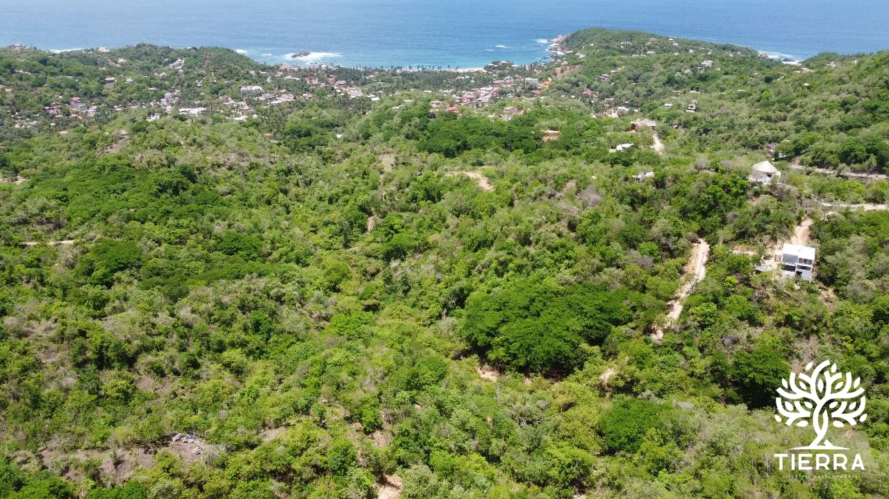

Casi todo el que busca un terreno en Mazunte se topa con lo mismo: fotos preciosas, ningún precio y un «escríbenos por WhatsApp». Esta guía va al revés. Publicamos los precios reales de cada lote que tenemos disponible, explicamos por qué unos cuestan el doble que otros y te decimos qué revisar antes de pagar un peso — aunque acabes comprando con otro.
Lo escribimos desde la costa: Tierra Desarrollos vende terrenos y construye casas en Mazunte, Puerto Ángel y La Boquilla, y las cifras que verás abajo salen de nuestro propio inventario, actualizado.
Depende sobre todo de dos cosas: dónde está y si tiene vista al mar. La superficie importa mucho menos de lo que la gente cree — el precio por metro cuadrado es lo que de verdad separa una zona de otra.
| Zona | Superficie | Precio del lote | Precio por m² |
|---|---|---|---|
| Mazunte Azimut · selva, algunos con vista |
422 – 1,299 m² | $464,090 – $1,298,850 | $1,000 – $1,251 |
| Puerto Ángel Nabani · vista al océano, playas caminando |
226 – 804 m² | $502,222 – $1,751,111 | $1,889 – $2,389 |
| La Boquilla Aldea Tao · acantilado frente al Pacífico |
426 – 1,187 m² | $825,000 – $2,200,105 | $1,650 – $2,200 |
Precios en pesos mexicanos, de contado, de los lotes disponibles en los desarrollos de Tierra al día de hoy. No son un promedio del mercado de toda la costa: son nuestras cifras, que es justamente lo que casi nadie publica. La disponibilidad cambia cuando se vende un lote — el mapa de cada proyecto la muestra en vivo.
Mazunte es la entrada más accesible. A ~$1,000/m² es donde el metro cuadrado cuesta menos, porque los lotes están en ladera de selva y no todos miran al mar. A cambio, el pueblo, la playa y Punta Cometa quedan caminando.
La vista al mar cuesta, aproximadamente, el doble. Pasar de selva en Mazunte a vista al océano en Puerto Ángel o acantilado en La Boquilla mueve el precio de ~$1,000 a ~$1,650–$2,389 por m². No es un capricho del vendedor: es escasez pura, hay una sola primera línea.
Si tu presupuesto es fijo, juega con la superficie, no con la zona. Un lote de 250 m² con vista en Puerto Ángel cuesta casi lo mismo que uno de 500 m² sin vista en Mazunte. La pregunta real no es «cuál es más barato», sino qué vas a hacer ahí: una casa compacta frente al mar rinde distinto que un terreno grande donde quepa jardín, alberca y una ampliación futura.
Un atajo útil: divide siempre el precio entre los metros. Es el único número que te deja comparar peras con peras entre dos anuncios de zonas distintas.
Comprar en la costa no es más riesgoso que comprar en la ciudad: es distinto. Casi todos los problemas que hemos visto empiezan igual, con alguien que dio algo por hecho porque «se veía todo en orden». Pide esto por escrito, siempre, y compáralo con lo que caminaste:
En los proyectos de Tierra entregamos título de posesión en regla y acompañamiento legal completo, y te explicamos cada documento antes de firmar, sin letra chica. Aun así, nuestro consejo es el mismo que si compraras a cualquiera: revísalo con tu propio abogado. Un desarrollador que se molesta porque quieres una segunda opinión te está diciendo algo.
La franja costera de México está dentro de la llamada zona restringida, y eso cambia la forma en que un extranjero adquiere (por ejemplo, mediante fideicomiso bancario o una sociedad mexicana). Cómo aplica exactamente depende del régimen de cada predio, así que revísalo caso por caso con el asesor legal antes de entregar cualquier anticipo. Es un trámite normal y muy común en la costa; lo grave es asumir que no hace falta.
Son pueblos vecinos a pocos minutos entre sí, pero se viven muy distinto — y esa diferencia debería pesar más que el precio a la hora de elegir.
Se llega por aire a Huatulco o a Puerto Escondido y de ahí por carretera. Vale la pena venir en temporada de lluvias al menos una vez si vas en serio: el camino, el agua y el verde se ven completamente distintos a como los conociste en marzo.
La mitad de la gente que compra aquí no busca un terreno: busca una casa. El terreno es solo la primera factura, y casi siempre la más fácil de entender. Construir en la costa tiene reglas propias — acceso, pendiente, salitre, logística de materiales, lluvias — y es donde los presupuestos se descuadran.
Lo explicamos aparte, con las partidas reales de una obra y lo que las encarece: cuánto cuesta construir una casa en la Costa de Oaxaca →
Si construyes con nosotros, recibes acceso a un portal privado donde ves las fotos del avance y el desglose de costos de tu obra, semana a semana. Es la única forma honesta que conocemos de responder «¿en qué se está yendo mi dinero?» estando a mil kilómetros.
En Azimut, nuestro desarrollo en Mazunte, los lotes disponibles van de $464,090 a $1,298,850 MXN, con superficies de 422 a 1,299 m² — aproximadamente entre $1,000 y $1,251 por m². Es el precio por m² más bajo de nuestros tres desarrollos.
Porque no pagas suelo, pagas escasez: hay una sola primera línea. Un lote en la selva de Mazunte ronda los $1,000/m²; uno con vista al océano en Puerto Ángel o sobre acantilado en La Boquilla llega a $2,200–$2,389/m². Si el presupuesto manda, un lote más pequeño con vista suele costar lo mismo que uno grande sin ella.
El título y su cadena de antecedentes, la constancia de que no hay adeudos ni gravámenes, el plano con medidas y colindancias, el uso de suelo, la evidencia de servicios (agua y luz) y el acceso legal y físico al lote. Si algo no te lo pueden mostrar por escrito, no lo des por hecho.
Sí, pero la franja costera está dentro de la zona restringida, así que la forma de adquirir cambia (fideicomiso bancario o sociedad mexicana, según el caso) y depende del régimen del predio. Revísalo con el asesor legal antes de entregar cualquier anticipo.
En nuestros desarrollos, sí: agua, luz y acceso listo para construir. Fuera de un desarrollo es lo primero que debes verificar en campo — introducir servicios a un terreno aislado puede costar más que el descuento que te ofrecieron.
Sí, hay esquemas de enganche y mensualidades flexibles. Las condiciones exactas dependen del lote y te las confirma un asesor por WhatsApp.
Te recibimos en la costa para que veas los lotes, el acceso y la vista con tus propios ojos. Sin compromiso y sin discurso de venta.